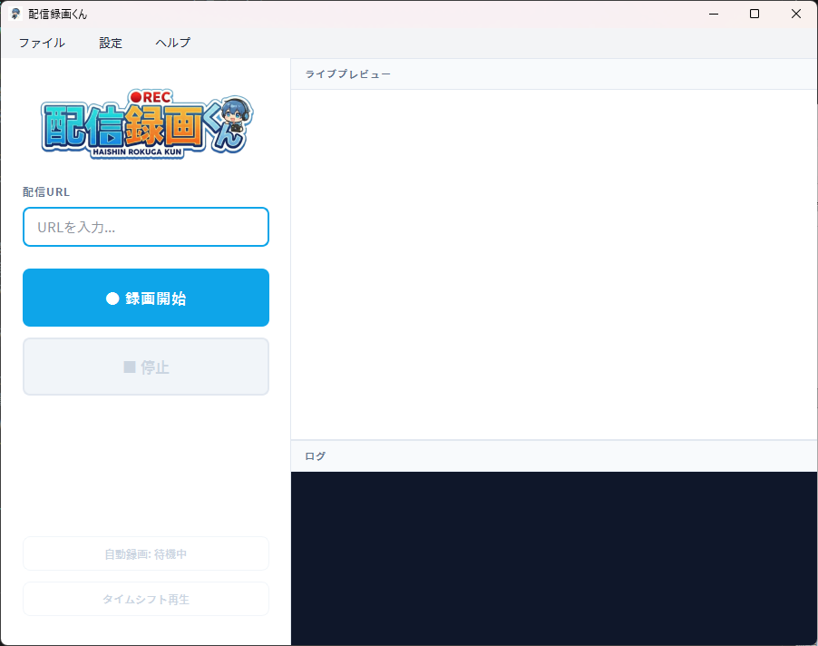
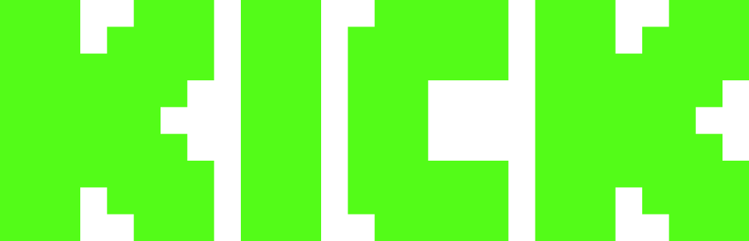

✨ 最新版 v1.2 リリース
お気に入りの配信を、
お気に入りの配信を、
もう見逃さない！
YouTube・Twitch・Kick・TikTok・ツイキャス・ニコニコ生放送・
radiko・OPENREC・bilibili・AbemaTV・17LIVE・
BIGO
LIVE・ふわっち に対応！
URLをポンと入れるだけで、誰でも簡単に高画質録画。

お知らせ
- 2026.01.10 AbemaTV, 17LIVE, BIGO LIVE, ふわっち の録画に対応しました！🎉
- 2026.01.09 radiko, OPENREC.tv, bilibili の録画に対応しました！
- 2026.01.05 Kickの録画に対応したバージョン v1.1.0 をリリースしました。
- 2025.12.25 サイトをリニューアルオープンしました。
対応サイト
主要なプラットフォームに対応


